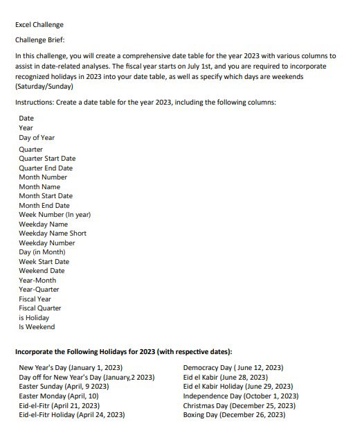
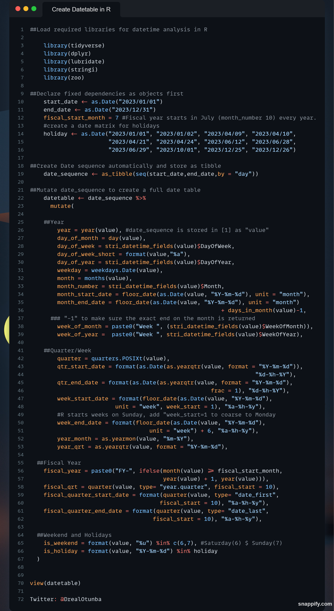

library(tidyverse)
library(dplyr)
library(lubridate)
library(stringi)
library(zoo)Creating a Comprehensive Date Table for Time Intelligence Analysis in R
lubridate
stringi
zoo
Time Intelligence
Formuating comprehesive datetime feilds in R with the {stringi}, {zoo} and {lubridate} packages
Creating a Comprehensive Date Table for Time Intelligence Analysis in R Formulating comprehensive datetime fields in R with the {stringi}, {zoo} and {lubridate} package
I created this post as a direct response to Malcom Okonkwo’s twitter post challenging r-lang users to create a comprehensive date table for the year 2023 in R. He solved the challenge in SQL and had quoted another post completing the same challenge using Microsoft Excel. I decided to complete this task in R.
I mean, why not? After all, R’s flexibility with datetime manipulation is notoriously underrated.
Here’s a picture of the challenge prompt.

Getting Started with the Basics
What are the task variables and problems?
- Comprehensive date table needed for the year 2023
- Fiscal year starts on July 1st
- Recognized holidays to be incorporated into the date table as listed in the prompt
- Weekends are defined as Sundays and Saturdays
- Variables and corresponding observations are to be generated automatically (of course!)
Unveiling the aRtistry to Solve this Challenge
- Load the required R packages needed for Time Intelligence analysis
stringi [(Gagolewski 2022)]
lubridate [(Grolemund and Wickham 2011)]
tidyverse [(Wickham et al. 2019)]
- Declare fixed dependencies stored as objects first
start_date <- as.Date("2023/01/01")
end_date <- as.Date("2023/12/31")
#Fiscal year starts in July (month_number 7) every year
fiscal_start_month = 7
##create a date matrix for recognized holidays
holiday<- as.Date(
"2023/01/01", "2023/01/02", "2023/04/09", "2023/04/10",
"2023/04/21", "2023/04/24", "2023/06/12", "2023/06/28",
"2023/06/29", "2023/10/01", "2023/12/25", "2023/12/26"
)- Create Date sequence automatically and store as a tibble
date_sequence <- as_tibble(seq(start_date,end_date,by = "day"))head(date_sequence)# A tibble: 6 × 1
value
<date>
1 2023-01-01
2 2023-01-02
3 2023-01-03
4 2023-01-04
5 2023-01-05
6 2023-01-06
Note
Generated date sequences are stored as 365 observations of the variable value. This variable name will remain unchanged throughout this post.
- Mutate date_sequence to create a full date table For the sake of simplicity the sections of this stage will be discussed in three parts; Year, Quarter/Week, Fiscal Year and Weekend/Holiday wrangling
- Year
datetable_year <- date_sequence %>%
mutate(
##Year
year = year(value), #date_sequence is stored in [1] as "value"
day_of_month = day(value),
day_of_week = stri_datetime_fields(value)$DayOfWeek,
day_of_week_short = format(value,"%a"),
day_of_year = stri_datetime_fields(value)$DayOfYear,
weekday = weekdays.Date(value),
month = months(value),
month_number = stri_datetime_fields(value)$Month,
month_start_date = floor_date(as.Date(value, "%Y-%m-%d"), unit = "month"),
month_end_date = floor_date(as.Date(value, "%Y-%m-%d"), unit = "month")
+ days_in_month(value)-1,
### "-1" to make sure the exact end on the month is returned
week_of_month = paste0("Week ", (stri_datetime_fields(value)$WeekOfMonth)),
week_of_year = paste0("Week ", stri_datetime_fields(value)$WeekOfYear)
)Now, take a look at the first part of the datetable
head(datetable_year)# A tibble: 6 × 13
value year day_of_month day_of_week day_of_week_short day_of_year
<date> <dbl> <int> <int> <chr> <int>
1 2023-01-01 2023 1 1 Sun 1
2 2023-01-02 2023 2 2 Mon 2
3 2023-01-03 2023 3 3 Tue 3
4 2023-01-04 2023 4 4 Wed 4
5 2023-01-05 2023 5 5 Thu 5
6 2023-01-06 2023 6 6 Fri 6
# ℹ 7 more variables: weekday <chr>, month <chr>, month_number <int>,
# month_start_date <date>, month_end_date <date>, week_of_month <chr>,
# week_of_year <chr>- Quarter/Week
datetable_qtr_wk <- date_sequence %>%
mutate(
##Quarter/Week
quarter = quarters.POSIXt(value),
qtr_start_date = format(as.Date(as.yearqtr(value, format = "%Y-%m-%d")),
"%d-%h-%Y"),
qtr_end_date = format(as.Date(as.yearqtr(value, format = "%Y-%m-%d"),
frac = 1), "%d-%h-%Y"),
week_start_date = format(floor_date(as.Date(value, "%Y-%m-%d"),
unit = "week", week_start = 1), "%a-%h-%y"),
#R starts weeks on Sunday, add "week_start=1 as an arg" to coarse to Monday
week_end_date = format(floor_date(as.Date(value, "%Y-%m-%d"),
unit = "week") + 6, "%a-%h-%y"),
year_month = as.yearmon(value, "%m-%Y"),
year_qrt = as.yearqtr(value, format = "%Y-%m-%d")
)The r chunk above create multiple qtr/wk fields using the ‘value’ variable and the functionality of the loaded R packages. A look at the second part of the date table.
head(datetable_qtr_wk)# A tibble: 6 × 8
value quarter qtr_start_date qtr_end_date week_start_date week_end_date
<date> <chr> <chr> <chr> <chr> <chr>
1 2023-01-01 Q1 01-Jan-2023 31-Mar-2023 Mon-Dec-22 Sat-Jan-23
2 2023-01-02 Q1 01-Jan-2023 31-Mar-2023 Mon-Jan-23 Sat-Jan-23
3 2023-01-03 Q1 01-Jan-2023 31-Mar-2023 Mon-Jan-23 Sat-Jan-23
4 2023-01-04 Q1 01-Jan-2023 31-Mar-2023 Mon-Jan-23 Sat-Jan-23
5 2023-01-05 Q1 01-Jan-2023 31-Mar-2023 Mon-Jan-23 Sat-Jan-23
6 2023-01-06 Q1 01-Jan-2023 31-Mar-2023 Mon-Jan-23 Sat-Jan-23
# ℹ 2 more variables: year_month <yearmon>, year_qrt <yearqtr>- Fiscal Year
datetable_fiscal_yr <- date_sequence %>%
mutate(
##Fiscal Year
fiscal_year = paste0("FY-", ifelse(month(value) >= fiscal_start_month,
year(value) + 1, year(value))),
fiscal_qrt = quarter(value, type= "year.quarter", fiscal_start = 10),
fiscal_quarter_start_date = format(quarter(value, type= "date_first",
fiscal_start = 10), "%a-%h-%y"),
fiscal_quarter_end_date = format(quarter(value, type= "date_last",
fiscal_start = 10), "%a-%h-%y")
)Now, a look at the fiscal years variables
head(datetable_fiscal_yr)# A tibble: 6 × 5
value fiscal_year fiscal_qrt fiscal_quarter_start_date
<date> <chr> <dbl> <chr>
1 2023-01-01 FY-2023 2023. Sun-Jan-23
2 2023-01-02 FY-2023 2023. Sun-Jan-23
3 2023-01-03 FY-2023 2023. Sun-Jan-23
4 2023-01-04 FY-2023 2023. Sun-Jan-23
5 2023-01-05 FY-2023 2023. Sun-Jan-23
6 2023-01-06 FY-2023 2023. Sun-Jan-23
# ℹ 1 more variable: fiscal_quarter_end_date <chr>- Weekend and Holiday
datetable_wknd_hol <- date_sequence %>%
mutate(
##Weekend and Holidays
is_weekend = format(value, "%u") %in% c(6,7), #Saturday(6) $ Sunday(7)
is_holiday = format(value, "%Y-%m-%d") %in% holiday
)
head(datetable_wknd_hol)# A tibble: 6 × 3
value is_weekend is_holiday
<date> <lgl> <lgl>
1 2023-01-01 TRUE FALSE
2 2023-01-02 FALSE FALSE
3 2023-01-03 FALSE FALSE
4 2023-01-04 FALSE FALSE
5 2023-01-05 FALSE FALSE
6 2023-01-06 FALSE FALSE - Binding all sections together Now that all sections of the date table has been created, let’s bind them all together. This automatically merges all the code chunks above and produce a complete output.
datetable <- bind_cols(datetable_year, datetable_fiscal_yr,
datetable_qtr_wk, datetable_wknd_hol,
.name_repair = "minimal"
)- Examine the dimension, column, rows and data types for the date table.
- View date table
view(datetable)- Examine date table dimension
dim(datetable)[1] 365 29The code chunk above reveal [datetable] as a tibble with 365 rows (total days of the year) and 29 columns (feilds generated automatically).
- Examine data types in date table
glimpse(datetable)Rows: 365
Columns: 29
$ value <date> 2023-01-01, 2023-01-02, 2023-01-03, 2023-01…
$ year <dbl> 2023, 2023, 2023, 2023, 2023, 2023, 2023, 20…
$ day_of_month <int> 1, 2, 3, 4, 5, 6, 7, 8, 9, 10, 11, 12, 13, 1…
$ day_of_week <int> 1, 2, 3, 4, 5, 6, 7, 1, 2, 3, 4, 5, 6, 7, 1,…
$ day_of_week_short <chr> "Sun", "Mon", "Tue", "Wed", "Thu", "Fri", "S…
$ day_of_year <int> 1, 2, 3, 4, 5, 6, 7, 8, 9, 10, 11, 12, 13, 1…
$ weekday <chr> "Sunday", "Monday", "Tuesday", "Wednesday", …
$ month <chr> "January", "January", "January", "January", …
$ month_number <int> 1, 1, 1, 1, 1, 1, 1, 1, 1, 1, 1, 1, 1, 1, 1,…
$ month_start_date <date> 2023-01-01, 2023-01-01, 2023-01-01, 2023-01…
$ month_end_date <date> 2023-01-31, 2023-01-31, 2023-01-31, 2023-01…
$ week_of_month <chr> "Week 1", "Week 1", "Week 1", "Week 1", "Wee…
$ week_of_year <chr> "Week 1", "Week 1", "Week 1", "Week 1", "Wee…
$ value <date> 2023-01-01, 2023-01-02, 2023-01-03, 2023-01…
$ fiscal_year <chr> "FY-2023", "FY-2023", "FY-2023", "FY-2023", …
$ fiscal_qrt <dbl> 2023.2, 2023.2, 2023.2, 2023.2, 2023.2, 2023…
$ fiscal_quarter_start_date <chr> "Sun-Jan-23", "Sun-Jan-23", "Sun-Jan-23", "S…
$ fiscal_quarter_end_date <chr> "Fri-Mar-23", "Fri-Mar-23", "Fri-Mar-23", "F…
$ value <date> 2023-01-01, 2023-01-02, 2023-01-03, 2023-01…
$ quarter <chr> "Q1", "Q1", "Q1", "Q1", "Q1", "Q1", "Q1", "Q…
$ qtr_start_date <chr> "01-Jan-2023", "01-Jan-2023", "01-Jan-2023",…
$ qtr_end_date <chr> "31-Mar-2023", "31-Mar-2023", "31-Mar-2023",…
$ week_start_date <chr> "Mon-Dec-22", "Mon-Jan-23", "Mon-Jan-23", "M…
$ week_end_date <chr> "Sat-Jan-23", "Sat-Jan-23", "Sat-Jan-23", "S…
$ year_month <yearmon> Jan 2023, Jan 2023, Jan 2023, Jan 2023, …
$ year_qrt <yearqtr> 2023 Q1, 2023 Q1, 2023 Q1, 2023 Q1, 2023…
$ value <date> 2023-01-01, 2023-01-02, 2023-01-03, 2023-01…
$ is_weekend <lgl> TRUE, FALSE, FALSE, FALSE, FALSE, FALSE, TRU…
$ is_holiday <lgl> FALSE, FALSE, FALSE, FALSE, FALSE, FALSE, FA…Code Block
A screen grab of all r-chunk as one? Why not?

Packages Used
Gagolewski, Marek. 2022. “Stringi: Fast and Portable Character String Processing in r” 103. https://doi.org/10.18637/jss.v103.i02.
Grolemund, Garrett, and Hadley Wickham. 2011. “Dates and Times Made Easy with Lubridate” 40. https://www.jstatsoft.org/v40/i03/.
Wickham, Hadley, Mara Averick, Jennifer Bryan, Winston Chang, Lucy D’Agostino McGowan, Romain François, Garrett Grolemund, et al. 2019. “Welcome to the Tidyverse” 4: 1686. https://doi.org/10.21105/joss.01686.
Zeileis, Achim, and Gabor Grothendieck. 2005. “Zoo: S3 Infrastructure for Regular and Irregular Time Series” 14. https://doi.org/10.18637/jss.v014.i06.